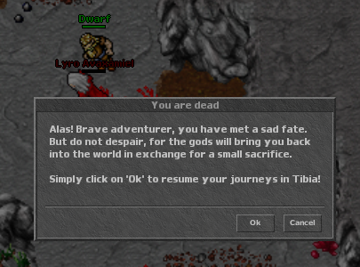
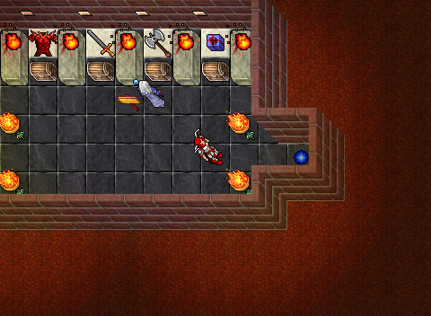
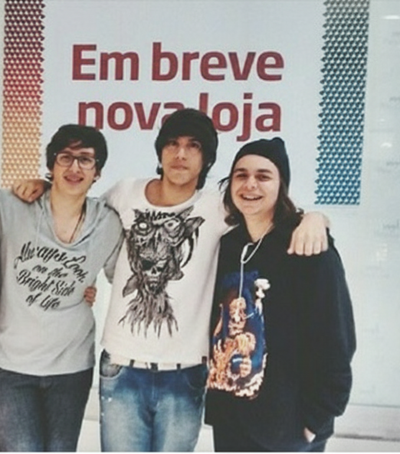

Ultimas Notícias
 10 de Novembro
de
2025- 11:00
10 de Novembro
de
2025- 11:00
Amanhã, 11 de Novembro, o server save (salvamento do servidor) emtodosos mundos
de jogo levará cerca de 30 minutos devido a trabalhos de manutenção. Durante este período de
inatividade, o website também poderá estar temporariamente indisponível. Esperamos que todos
os mundos de jogo e o website voltem a ficar online por volta das 10:30 CET. (Horário da
Europa Central)
 10 de Novembro
de
2025 - 10:00
10 de Novembro
de
2025 - 10:00
TibiaDraptor.com convida você para uma rodada de Bingo! O concurso acontecerá entre os
server saves de 11 de Novembro e 15 de Novembro. Leia todas as informações e as regras
diretamente no TibiaDraptor para estar pronto e preparado quando todos os Desafios forem
publicados com o início do evento!
Historia
Início
O mundo de Tibia é um dos mais antigos e misteriosos MMORPGs, lançado originalmente em 1997. Quatro estudantes alemães lançaram o primeiro servidor, o que deu início a uma das comunidades de jogo mais leais da história. A história inicial era baseada em lendas nórdicas e mitologias clássicas, com um foco pesado na exploração e na sobrevivência. No início, não havia sequer gráficos coloridos! A dedicação da comunidade ajudou o jogo a evoluir de um projeto de hobby para o vasto mundo que conhecemos hoje.
Esta é apenas uma introdução, e a jornada para desvendar todos os segredos de Tibia requer tempo, paciência e de preferência MUITOS COMPANHEIROS
Aventura
A verdadeira magia de Tibia reside em sua exploração sem fim. Mapas vastos e detalhados, cheios de segredos e *quests* que despertam sua vontade de explorar e ir cada vez mais afundo, as quests convidam o jogador a sair da segurança de Thais. Cada caverna, montanha, masmorra, até mesmo um buraco no meio do nada pode te jogar no meio de uma emboscada, mas a recompensa muitas das vezes é absurda!!
Explorar requer preparo adequado e, acima de tudo, a disposição para morrer (muitas vezes!).
Estilo de Jogo
Tibia pode ser jogado sozinho e também com TODOS os seus amigos (inimigos também, nem tudo são flores..), faça amizades ao longo da sua jornada, compartilhe experiências, faça o que der vontade quando e onde quiser, afinal esse mundo é livre!
Em algum momento, voce vai se deparar com alguma dificuldade e é aqui que seus
companheiros ganham protagonismo, você não precisa se divertir sozinho, junte um galera
e explorem esse mundo vasto;façam quests, vá atrás daquela pessoa chata que ficou atrás
de você o jogo todo matando seus monstros e roubando seus itens... agora você esta na
maioria não é...
Por fim, meu intiuto aqui é te convidar a fazer parte deste universo, experimente,
se divirta, entre em situações ilárias, se fruste também, isso é normal, mas não
desista!
Faça seu estilo de jogo, foque na sua diversão, conheça pessoas e leve os para a
vida toda!.


Faça seu estilo de jogo, foque na sua diversão, conheça pessoas e leve os para a vida toda!.
Sobre mim
Minha trajetória no tibia se extende até os tempos de hoje, sempre conhecendo pessoas novas e tendo contato com inúmeros players que compartilham da mesma curiosidade que eu, de conhecer um mundo gigantesco e explorar cada centímetro dele (quando temos tempo...).
Em 2011 me envolvi em uma discussão com um jogador chamado "Strikersm", a briga em si
começou por conta de monstro que eu estava caçando e ele começou a matar os mesmo
monstros que eu(fazendo isso, eu acabo sendo penalizado deixando de ganhar itens e
experiência), até ai tudo bem, era só apenas mudar de local e tudo certo ... se fosse
qualquer outra pessoa menos eu; como eu era uma criança na época, quis preservar meu
orgulho e comecei a atacar ele(sim, podemos nos bater dependendo do mundo que você
joga), por fim morri e perdi meus itens...MAS EU SOU ORGULHOSO, chamei alguns amigos e
aquilo virou uma bagunça, era gente sem entender e entrando no meio da briga, gente
morrendo que não sabia nem ao menos o que estava acontecendo.. pois bem, umas 2 horas
foi o tempo que essa brincadeira durou, no final de tudo eu acabei fazendo amizade com o
player, que logo se apresentou como "Cayo", depois disso começamos a jogar juntos e
descobri que ele era de Sorocoba e jogava junto com seus amigos, acabei me enturmando
com todos eles, após 2 anos surgiu uma oportunidade de ir para sorocaba e claro que eu
fui conhecer os amigos que fiz dentro de jogo e foi uma experiência incrivel, foi
engraçado e como que eu iria imaginar que uma discussão acabaria nisso!
Vou deixar uma imagem com alguns desses amigos logo abaixo que tiramos quando fui
para Sorocaba, o Cayo não esta nessa foto, mas os outros dois da direita Otávio que
hoje mora no canadá e o "Vitinho" na
direita ainda mora em Sorocaba, inclusive ele que encontrou essa foto pra
mim.
Sou um entusiasta do TIBIA sim, pois pra muitos é um estilo de
vida, é uma forma de escapar da realidade por um momento e conseguir uma imersão
onde se pode tirar muito proveito.. eu amo esse jogo e amo tudo que ele me
proporciona/proporcionou por anos..

Sou um entusiasta do TIBIA sim, pois pra muitos é um estilo de vida, é uma forma de escapar da realidade por um momento e conseguir uma imersão onde se pode tirar muito proveito.. eu amo esse jogo e amo tudo que ele me proporciona/proporcionou por anos..